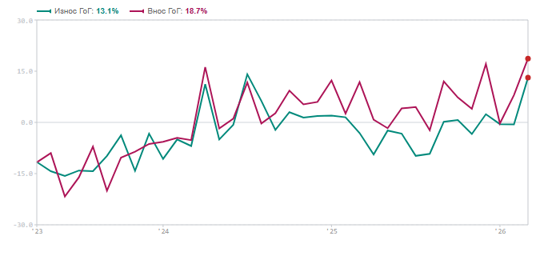
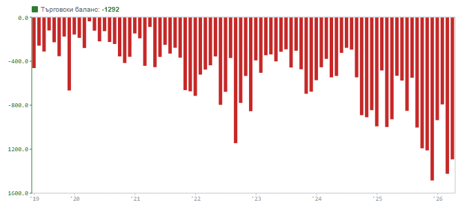

Салдото в търговията със стоки за март 2026 г. по данни на БНБ: най-голям месечен дефицит за последните пет години. Бързата оценка на НСИ за април 2026 г. показва частично подобрение до -1 292 EUR млн, но и двете стойности остават значително под обичайните за периода нива.
Търговското салдо по стоки (платежен баланс, БНБ) достига -1 423 EUR млн през март 2026 г. — спад с 630 млн евро спрямо февруари (-793 EUR млн).

Данните на НСИ (Extrastat) за април 2026 г. показват износ от 3 959 EUR млн (+13,4% г/г) и внос от 5 251 EUR млн (+18,8% г/г). По-бързият ръст на вноса спрямо износа формира дефицита от -1 292 EUR млн за месеца.

Стойността за България се ускорява до +12,1% г/г за април 2026 г. (от +4,9% г/г за март) — ускорение от 7,2 пр.п. за един месец, представляващо съществено отклонение спрямо обичайната динамика. Паралелно е ревизирана стойността за Еврозоната (ЕА20) надолу до +3,9% г/г, при непроменено ниво за България. Разривът между двете (+8,2 пр.п.) е по-голям от предварително отчетения.